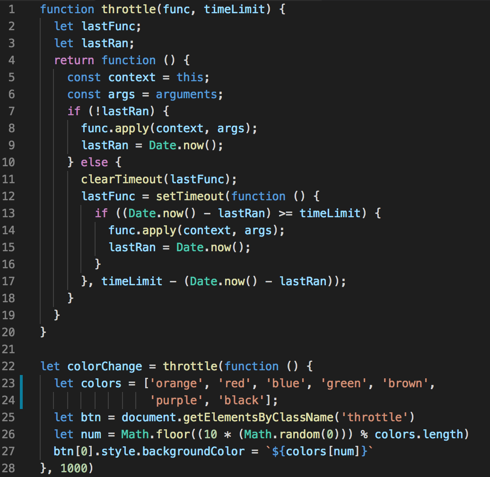
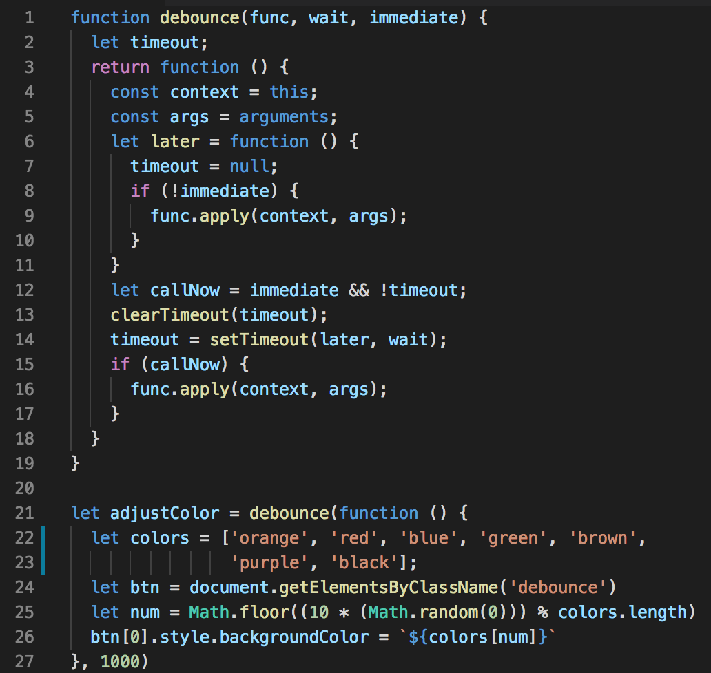

The buttons both change color when clicked, and both have a one second timer set. Play around with clicking them at different intervals to see if you can figure out the difference.
What it does
Throttle allows you to click a button (or perform any action)
as many times as you want, however it limits the number of times
that the funtion will be executed. This leads to a delayed response
for every action that's triggered. Throttle does not care about if
a user is clicking or not when the time limit is over. It will just
fire one more time and then stop.
How to remember it
The throttle function limits how many callbacks can be made within a given period of time. It
doesn't have any impact on the speed that the first call is made (so you get fast response),
and the length you wait between calls is strictly determined by the
Timeout you set.
Code

What it does
Debounce is simpler in my opinion than throttle. Debounce will trigger
only once, and it happens when the action has finished AND a timeout
has completely run. This could be useful for something like typing
in a search bar or resizing a window where you want something to be
done before you fire the callback.
How to remember it
Debounce is like that friend who will always come through and do what
you asked but they'll literally wait until you asked so long ago that
you forgot anyway.
Code

Ultimately these are both fine ways of improving performance on a website. It just depends what kind of functionality you're looking for.